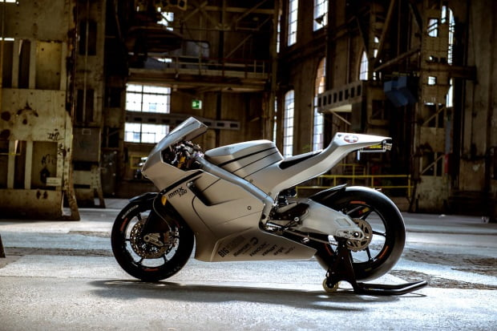

La famosa Suter MMX 500 pertenece a la compañía SkilSuter, y no sólo cumple con todos los deseos de cualquier motorista, sino que además se fabricarán solo 99 de ellas.Entre sus prestaciones destaca el motor V4 de 2T de 576 cc capaz de entregar 195 caballos de potencia, alcanza una velocidad máxima de 315 km/h gracias a su peso de 127 kg. Su precio es de 110 mil euros que la ubican entre las motos más caras del mundo.
